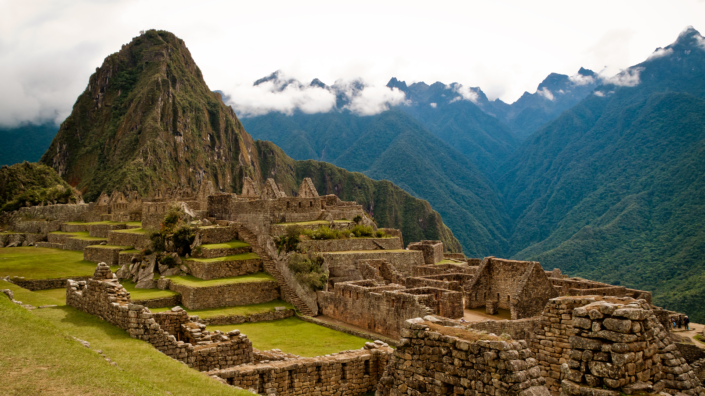

Ancient Indian Architecture
Posted on 01.01.2017 by Someone
Indian architecture is as old as the history of the civilization.The earliest remains of recognizable building activity in the India dates back to the Indus Valley cities. Among India's ancient architectural remains, the most characteristic are the temples, Chaityas, Viharas, Stupas and other religious structures. In ancient India, temple architecture of high standard developed in almost all regions. The distinct architectural style of temple construction in different parts was a result of geographical, climatic, ethnic, racial, historical and linguistic diversities. The Rock-cut structures present the most spectacular piece of ancient Indian art specimen. Most of the rock-cut structures were related to various religious communities.